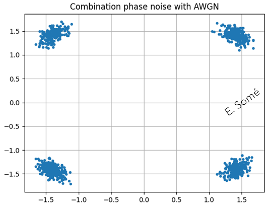

Coherent Optical Communication Networks
...Sample results of my research: Page update in progress ...
- Coherent optical and basic concepts definitions:
- Subcarrier frequencies are chosen so that the subcarriers are orthogonal to each other,
- at the center of each subcarrier, signals contribution from other subcarriers is zero
- crosstalk between the sub-channels is eliminated and inter-carrier guard bands are not required
- orthogonality requires that the subcarrier spacing is \(\Delta f = \frac {1}{T_{U}}\) Hertz, where \(T_{U}\) seconds is the useful symbol duration with N subcarriers, the total passband bandwidth will be \(B ≈ N·\Delta f\) (Hz)
- Orthogonality allows high spectral efficiency.
In coherent optical communication, information is encoded into the electrical field of a lightwave. Decoding it entails the direct measurement of the complex electrical field. A coherent requires careful phase and polarization management, which turns out to be the main obstacle for the practicale implementation of a coherent receiver using optical based management methods.
This chapter has for aim to provide basic definitions on coherent detection and digital signal processing (DSP) which are essential building blocks of modern optical communications. Essential definitions have been extracted from the "Digital coherent optical systems", by Darli Augusto.
Principle of digital modulation
When studying communication theory, the first step is to understand how to represent signal in the different stages of the system. The process of mapping bits into waveforms and vice-versa is called digital modulation. In the transmission by a communication channel, in our case an optical fiber, the intensity and phase of an approximately sinusoidal carrier are modified to convey information. This process is called modulation. The modulated signal can be represented as:
\(x(t)=\sqrt{2} A(t) \cos(2\pi f_{c} t + \phi (t))\) (1)
where \(f_{c}\) is the carrier frequency, \(A(t)\) and \(\phi(t)\) respectively the amplitude and phase modulation components. The \(\sqrt{2}\) factor normalizes the energy of the \(\cos(.)\) function. We call this a passband signal representation. A further way on writing (1) is
\(x(t) = \sqrt{2} x_{I}(t)\cos(2\pi f_{c}t) - \sqrt{2} x_{Q}(t)\sin(2\pi f_{c}t)\)
where \(x_{I}(t) = A(t)\cos(\phi(t))\) and \(x_Q (t) = A(t) \sin(\phi (t))\) are the in-phase and quadrature components. Here we assume \(f_c > W/2\), where W is the spectral support of \(x_Q (t)\) and \(x_I (t)\).
It is possible to adopt another representation of the transmitted signals that suppress the dependence of the carrier frequency using complex numbers, call the baseband representation. The baseband representation of \(x(t)\) is
\(x_b (t)= x_I (t) + i x_Q (t)\)
Note that \(x(t)\) can be easily obtained back from \(x_b (t)\) by
\(x(t) = \sqrt {2} \Re\{x_b (t) e^{(i2\pi f_c t)}\}\)
In digital transmission systems with passband pulse amplitude modulation (PAM), the continuous time signals \(x_I (t)\) and \(x_Q (t)\) can be expressed as a sum of time-delayed continuous wave forms:
\(x_I (t)= \sum_{k} x_k^I g(t-kT_s )\)
\(x_Q (t) = \sum_{k} x_k^Q g(t-kT_s )\)
where \(T_s\) is the symbol period. We assume that signals \(x_I (t)\) and \(x_Q (t)\) have the same pulse shape \(g(t)\) and discrete in-phase and quadrature components \(x_k^I\) and \(x_k^Q\).
Depending on the choice of \(x_k^I\) and \(x_k^Q\), various modulation formats, represented by their constellation are implemented.
On-off keying (OOK) constellation has only two symbols, one with amplitude zero and the other with amplitude A. (OOK) is used in intra-office applications.
The second simplest modulation format is the binary phase-shift keying (BPSK). In BPSK, the two transmitted constellation symbols are in symmetric position with respect to the origin. At reception, coherent detection is required for polarity discrimination. BPSK uses only one degree of freedom, i.e., the modulation of the in-phase component. The simplest modulation format that exploits the two degrees of freedom provided by the complex plane is the quadrature phase-shift keying (QPSK) format. QPSK and BPSK are considered phase modulation formats because their amplitude is kept constant for all the constellation symbols.
A widely used family of modulation formats that achieves excellent performance is the M-ary quadrature amplitude modulation (M-QAM). In M-QAM, \(\sqrt{M}\) amplitude levels of the in-phase and quadrature component are uniformly distributed and independently modulated. Usually, \(M=L^2\), and \(L\) is a power of two.
|  |
There are several metrics to evaluate the performance of a modulation format, one of them is the spectral efficiency \((SE)\). It is defined as the ratio between the conveyed net bit rate, \(R_b\), and the bandwidth to support this rate, \(W\).
Receiver: The most common channel is the additive white Gaussian noise (AWGN) channel for which the received signal \(r(t)\) is given by:
\( r(t)=x(t)+ \eta (t)\)
where \(\eta(t)\) is the white Gaussian noise with a power spectral density to \(N_0/2\) over the entire spectrum. It is useful under the considerations that \(r(t)\) is filtered at the receiver, and the noise power of interest is that within the signal bandwidth. After the matched filter, the discrete complex baseband signal \(y_k\) is the sum of the original signal components \(x_k\) with a white Gaussian noise component \(\eta_{k}\):
\(y_k=x_k + \eta_{k}\)
The in-phase and the quadrature components of \(y_k\) are given by
\(y_k^I=x_k^I+ \eta_k^I\)
\(y_k^Q=x_k^Q+ \eta_k^Q\)
Where \(\eta_k^I\) and \(\eta_k^Q\) are zero-mean white Gaussian noise processes with variance \(N_0/2\) in the in-phase and quadrature components. The signal-to-noise ratio (SNR), calculated as the ratio of signal and noise powers considering both the in-phase and the quadrature components, can be expressed as SNR defined in terms of the signal power per bit as
\(SNR_b = E_b / N_0\) where \(E_b\) is the power per bit \((E_b/b)\), and \(b\) is the number of conveyed bits per symbol.
Laser
Optical modulation
We learned some basic concepts of digital modulation, and how information is conveyed by modifying the amplitude and phase of a carrier.
Semiconductor lasers can generate carriers with relatively narrow linewidth, with some tens or some few hundreds of KHz. Optical transmitters follow the same principle as any passband communication systems:
First, bits of information are sent from a data source to a symbol mapper that performs the assignment of symbols according to the constellation of a specific modulation format. Then, a shaping filter is used to generate pulses conveying the mapped symbols. This is all carried out in the digital domain, i.e., in a digital signal processing. Therefore, before transmitting the signal over the channel, digital-to-analog (DAC) converters are required to generate analog waveforms. Finally, these signals are sent to an optical modulator that converts the input analog electric signals into a modulated optical carrier.
In fiber optic communication systems, direct modulation is the simplest technique used to modulate an optical carrier. Direct modulation modifies the driving current of a semiconductor laser causing variations in the amplitude of the generated optical signal according to the information to be sent. As disadvantage, direct modulation produces pulses that are affected by chirp, which are continuous variations of the optical frequency during a symbol period. Chirp causes spectral broadening and limits the transmission rate in several ways, for example, impairing phase modulation.
a) – Phase modulator
The phase modulator (PM) is a device that relies on the pockels effect to imprint variations in the phase of an optical carrier. Such a device is comprised of a waveguide, which is generally lithium niobate \((LiNbO_{3})\) surrounded by a pair of electrodes that enable the application of an electric voltage.
b) – Mach-Zehnder modulator
The Mach-Zehnder modulator \((MZM)\) is a device that uses the principle of interference between propagating signals to generate amplitude and phase modulation. Its name stems from the fact that the structure employed to generate interference between the propagating signals is based on a Mach-Zehnder interferometer \((MZI)\). The optical signal entering the structure is divided into two distinct arms. In each of these arms, a phase modulator acts on the propagating optical signal by performing a phase shift proportional to the applied electric voltage. After this process, the optical signal from the two arms are recombined, and depending on the phase difference between them, a constructive or destructive interference pattern is observed.
c) – In-phase and quadrature modulator
The in-phase and quadrature modulator \((IQM)\) is a component that is capable of generating constellation symbols at any position in the complex plane. Its structure consists of a combination of two \(MZM\) and one \(\pi/2\) PM.
d) – Dual polarization modulator
In addition to conveying information in the phase and amplitude of the optical signal, digital coherent optical systems also uses polarization as an additional degree of freedom.
Optical receiver front-end, orthogonalization, and deskew
Deskew: responsible for compensating for possible temporal mismatches in the alignment of the four received components.
Chromatic dispersion: different spectral components of a guided mode propagate with distinct group velocities gives rise to the phenomenon known as chromatic dispersion. If left uncompensated, chromatic dispersion broadens the propagating pulses and lead to inter-symbol interference \((ISI)\). In optical fiber, chromatic dispersion is generated by two main contributions. The first one, called material dispersion, is related to the material from which the fiber is made. The second one is called waveguide dispersion, arises from the fact that part of the energy of the transmitted signal propagates in the fiber core, and another part in the fiber cladding.
Optical receiver: In optical receivers, the conversion of the optical signal into electric currents is performed by the photodetector.
Photodetectors: are optoelectronic devices that generate an electric current that is proportional to the squared modulus of the optical input field.
Coherent receivers are, by definition, structures that mix an input signal at frequency \(\omega_{c}\), with a local oscillator at frequency \(\omega_{LO}\), to recover the phase of the input carrier.
Mixing is a nonlinear operation that downconverts the signal at frequency \(\omega_{c}\) to the intermediate frequency \(\omega_{IF} = \omega_{c} - \omega_{LO}\)
Coherent detection can be classified into homodyne, heterodyne, and intradyne detection.
In homodyne detection, \(\omega_{c} = \omega_{LO}\), and the signal after mixing is at baseband.
In heterodyne detection, \(\omega_{c} \neq \omega_{LO}\), and a second downconversion procedure is required to recover the signal from the intermediate frequency \(\omega_{IF}\) to baseband.
Coherent optical systems implement an intradyne detector, for which \(\omega_{c} \approx \omega_{LO}\). In this case, downconversion from \(\omega_{IF} \approx 0\) to baseband is carried out by frequency recovery algorithms implemented by DSP.
Deskew block compensates for a temporal misalignment between in-phase and quadrature components at the output of ADCs, called skew.
Orthogonalization
Ideally, the in-phase and quadrature components received in the \(V\) and \(H\) polarization orientations of the receiver front-end are orthogonal, in the sense that they are uncorrelated.
However, transmitter or receivers imperfections may cause imbalances that induce a loss of orthogonality. Some examples of imperfections that contributes to these imbalances are the incorrect biasing of in-phase and quadrature modulators, and imperfections in power dividers, optical couplers, and hybrids.
Non-orthogonality between the in-phase and quadrature components translates into distortions in the received signal constellation, affecting the system performance.
The higher the order of the modulation format, the more severe are the performance penalties.
The orthogonalization stage aims to recover the orthogonal characteristic between the in-phase and quadrature components of the signals. There are several techniques that accomplish this task, being the Gram-Schmidt orthogonalization procedure the most common in optical receivers.
Orthogonal Frequency-Division Multiplexing (OFDM)
OFDM subcarrier channel signals are orthogonal to one another
Error correction for coherent optical communication
Forward Error Correction (FEC) coding is based on deterministically adding redundant bit to a source information bit sequence. After a transmission over a noisy channel, a decoding system tries to exploit the redundant information for fully recovering the source information.
Several methods for generating bit sequence from the source information bits are known. One example is the low-density parity check (LDPC).
Differential coding: is a technique used to provide unambiguous signal reception when using some types of modulations.